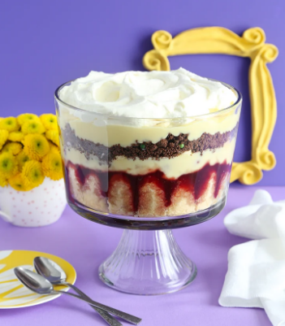

Rachel's English Trifle!

Why you should be making this dish(beef is the secret)
Ingredients you'll need to recreate this iconic dish
Total time: 30 minutes
- 1 package lady fingers
- 1 jar rapberry jam
- 2 cup custard
- 1 package raspberries
- 10 oz ground beef
- 3/4 cup peas
- 1/2 yellow onion
- 1 ripe bananas
- whipped cream
Let's get to making this dish!
- Sautée the ground beef with peas and onions and prepare a custard ahead of time
- Line the bottom of a large clear bowl with a layer of lady fingers.
- Add the raspberry jam until the lady fingers are completely coated. Cover the jam layer with half of your custard. Top with raspberries.
- Add another layer of lady fingers.
- Add a layer of the beef mixture.
- Add the rest of your custard and sliced bananas.
- Cover with whipped cream and garnish. Serve immediately, before people can run away.
- Serve it to your own Joey, Ross and Chandler!